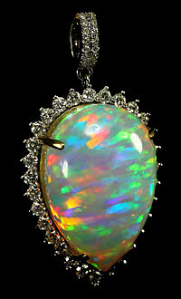

OPAL

ABOUT:
Opal is a hydrated amorphous form of silica (SiO2·nH2O); its water content may range from 3 to 21% by weight, but is usually between 6 and 10%. Because of its amorphous character, it is classed as a mineraloid, unlike crystalline forms of silica, which are classed as minerals. It is deposited at a relatively low temperature and may occur in the fissures of almost any kind of rock, being most commonly found with limonite, sandstone, rhyolite, marl, and basalt. Opal is the national gemstone of Australia.[4]
There are two broad classes of opal: precious and common. Precious opal displays play-of-color (iridescence), common opal does not.[5] Play-of-color is defined as "a pseudochromatic optical effect resulting in flashes of colored light from certain minerals, as they are turned in white light."[6] The internal structure of precious opal causes it to diffract light, resulting in play-of-color. Depending on the conditions in which it formed, opal may be transparent, translucent or opaque and the background color may be white, black or nearly any color of the visual spectrum. Black opal is considered to be the rarest, whereas white, gray and green are the most common.